Omschrijving
Joren, Gilles, Dries en Anthony hebben voor hun case van de innovatie route security ervoor gekozen om deel te nemen aan de Cyber Security Challenge. Dit is een nationale wedstrijd waar vooral universiteitsstudenten maar ook hogeschoolstudenten aan meedoen in teams van 4 personen. De bedoeling is om challenges op te lossen in CTF: capture the flag stijl, dit wil zeggen dat er telkens een soort code (lees: flag) verstopt zit in de challenge. De bedoeling is om zoveel mogelijk flags te vinden en daarmee zo veel mogelijk punten te verzamelen. De eerste ronde – de online qualifiers – hebben we deelgenomen op iSpace op de Corda Campus, waar verschillende andere PXL-teams ook aanwezig waren.
Om goed te kunnen scoren tijdens deze wedstrijd werden er de nodige voorbereidingen getroffen. Zo hebben we een aantal keren afgesproken bij elkaar thuis en op iSpace om ervaring op te doen in deze CTF challenges. Er werden vooral op Hack The Box en Over The Wire challenges geoefend. Hierbij hebben we onze kennis doorgegeven aan elkaar en probeerden we te oefenen op gebieden waar we nog niet zoveel ervaring in hadden.
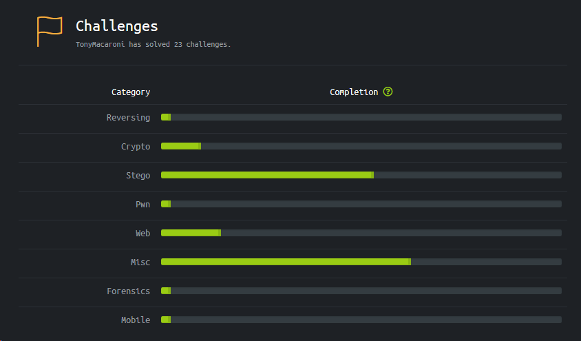Verslag
Tijdens de Cyber Security Challenge Belgium 2019 werden we onderworpen aan verschillende opgaven in verschillende domeinen van cyber security. De uitwerking van de challenges die wij opgelost hebben, hebben we uitgeschreven in een writeup en gecategoriseerd per onderwerp.
Miscellaneous
Acient writings #1
Deze opgave gaf ons onderstaande code, zonder verder enige informatie

Na een korte analyse kwamen we er al snel achter dat dit een vorm is van een esoterische taal. Een esoterische (programmeer)taal (ofwel esolang) is een taal die zelden gebruikt wordt om te programmeren, maar wel een programmeertaal die ontworpen is om de grenzen van computer programmeertaal ontwerp te testen, als hackinterface of als grap. Bovenstaande opgave is een voorbeeld van Befunge93. Dit hebben we gevonden door deze te vergelijken met een lijst esolangs. Dan hebben we naar een tool gezocht om deze te decoderen. De tool. Na het decoderen bekwamen we de flag.
Acient Writings #2
Bij deze challenge krijgen we het eerste en laatste deel van de code en moet je het middelste deel achterhalen.
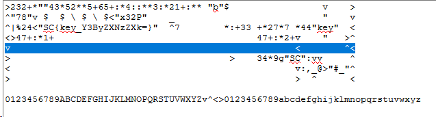Na een korte opzoeking van hoe deze esolang precies werkt, vonden we al snel welke lijn er precies miste. Deze lijn code moesten we doorgeven aan een interpreter (externe link) en dan verkregen we de flag.
Jailbreak #1
Bij deze challenge kregen we een .zip bestand met een wachtwoord erop (5_T1m3s.zip). Dit hebben we moeten kraken met volgende tool in Kali:
Fcrackzip -b -l 1-5 zipfile
Na een paar minuten wachten verkregen we het wachtwoord van de zip en in de zip zat een bestandje waar de eerste flag in zat (flag.txt)
Jailbreak #2
Na het oplossen van Jalbreak #1 krijg je 4 files:
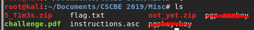Als je een cat doet van challenge.pdf vind je daarin een stream dat een pgp key vormt, nadat het gedecrypteerd wordt van base64. En iets verder kom je de passphrase tegen:
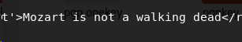In de instructions.asc file staat het geëncrypteerde bericht Met een online tool (https://8gwifi.org/pgpencdec.jsp) kan je het bericht decrypteren:
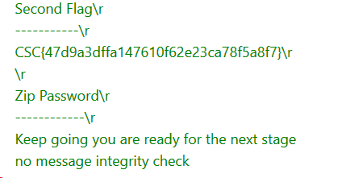Jailbreak #4
Na de vorige challenge krijg je een .zip file not_yet.zip deze moet je uitpakken met een script:
while [ "find . -type f -name '*.zip' | wc -l" -gt 0 ]; do find -type f -name ".zip" -exec unzip -- '{}' ; -exec rm -- '{}' ;; done
(dit omdat het 40k zips ineens zijn) Als dit script een paar uren heeft kunnen runnen dan geeft het uiteindelijk het laatste zip bestandje: enterthematrix.zip, om deze te unzippen heb je een wachtwoord nodig dit staat letterlijk op de afbeelding opensesame.jpg
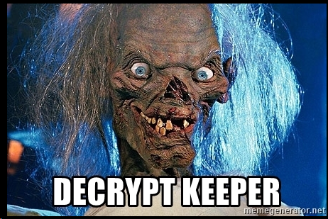Als de file geunzipt is (met wachtwoord: DECRYPT KEEPER) dan verkregen we een html-file. In de html file is een script te vinden en in dat script zit een CHAR ARRAY met alleen maar 1,0. Deze 1en en 0en worden eruit gehaald (alle ‘ “ ‘ en ‘,’ eruit gefilterd). Daarna is er een bitshift naar rechts nodig (dus een extra 0 van voor toevoegen en de laatste bit wegdoen) en als deze binaire code naar tekst wordt geconverteerd dan werd de flag verkregen.
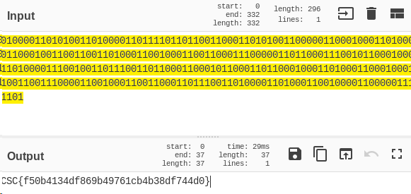Steganography
Digital Brussels
Bij deze opgave kregen we een afbeelding die bijna hetzelfde is als de achtergrond van de website van de challenge. Als je de verkregen afbeelding vergelijkt met het origineel (achtergrond van de CSC site) dan merk je op dat er een verschil is in de ramen van het “HiSense” gebouw
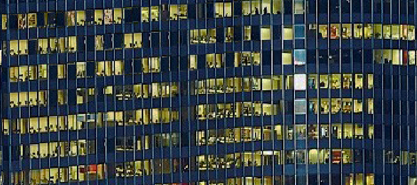
Als je de donkere ramen als 0 ziet en de lichte ramen als 1 dan kom je een binaire code uit Als deze geconverteerd wordt naar tekst vind je de flag. 011000110111001101100011011110110111100100110000011101010101111101010111001100010110111001111101
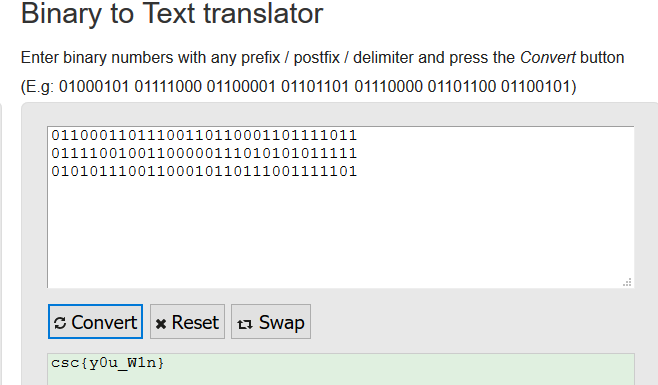Forensics
Alien Object
Bij deze challenge kregen we een afbeelding van de ruimte. In de metadata van de foto staat een base64 string:
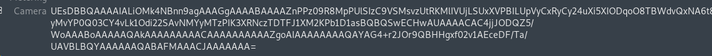Als deze gedecrypteerd wordt met CyberChef dan vonden we de flag.
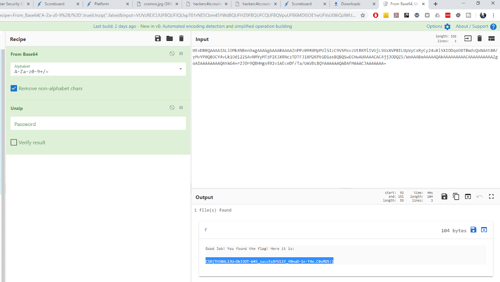Dragon.E01
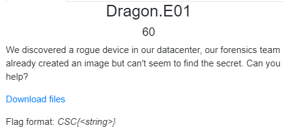We hebben FTK Imager gebruikt om de dumps te kunnen lezen. In wallpaper.jpg zit de flag verstopt.
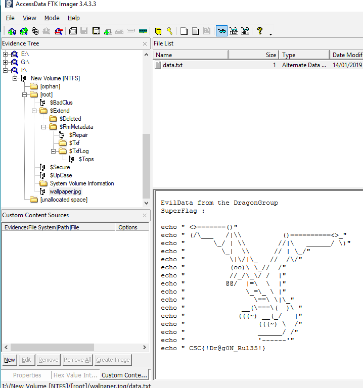Web
EZRouter
In deze challenge kreeg je de login pagina van een router. Na een beetje zoeken kwamen we erachter dat je gewoon kon inloggen met het standaard paswoord van het weergegeven type router. Vervolgens kreeg je gewoon de flag te zien.
H4cker C4TZ #1
Bij de hackercats uitdagingen kregen we een website (link) waar verschillende flags op verstopt zaten. Hier hebben we er 3 van de 5 van gevonden.
H4cker C4TZ #2
In de Jquery file van de website zat de 2e flag verstopt
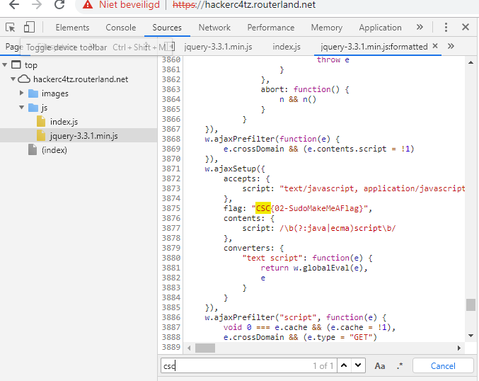H4cker C4TZ #3
Deze flag zat verstopt in het certificaat van de website.
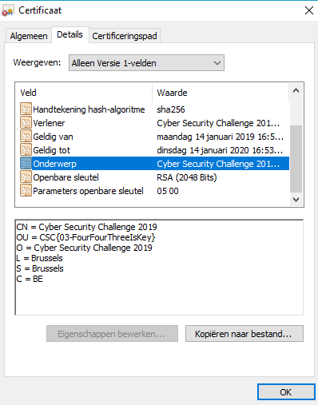Naast de gevonden oplossingen hebben we ook nog andere challenges geprobeerd deze helaas zonder succes, waaronder reverse engineering, exploitation en cryptografie

Voorbereiding 1
Samenkomst bij Anthony

Voorbereiding 1
Berre geraakt binnen bij HackTheBox
Voorbereiding 2
Samenkomst bij Dries

Voorbereiding
Dries kraakt een challenge

Voorbereiding 3
Samenkomst op iSpace, Corda Campus

Tijdens de Challenge
Team Accidental Brute Force wordt bespioneert door de Batsers

Tijdens de Challenge
Team RSA(s)killers en Team Accidental Brute Force aan het werk
Resultaat
We zijn op de 43ste plaats geëindigd met 505 punten (als 3e beste PXL Team), waardoor we bij de top 20% beste teams zaten!
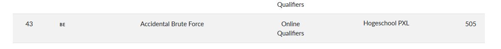Reflectie
Woensdag ochtend (13/03) zijn mijn team en ik samengekomen op iSpace op de Corda campus en zijn we met een open mind begonnen aan de Challenge. Ons hoofddoel was om in de top 50 te geraken, daarnaast wilde we ook graag doorstoten naar de finale (volgende ronde). Hiervoor hebben we dan ook de nodige voorbereidingen getroffen, hierbij heb ik meestal het initiatief genomen om een bijeenkomst te regelen. Zo zijn we een keer bij mij thuis samengekomen, een keer bij Dries en dan nog een laatste keer op iSpace in het weekend voor de wedstrijd. Aan het begin van de competitie ging alles heel vlot. Ik had me vooral gefocust op de Steganografie en Cryptografie challenges, omdat ik hier de meeste ervaring mee had. Daarnaast heb ik de miscelaneous challenges gedaan, deze gingen in het begin heel vlot omdat ik al eerdere ervaringen had met esolangs (voorbereiding Hack The Box). En ook het kraken van Zip bestanden is me niet onbekend. De laatste jailbreak challenge was wel een hele klus want het scriptje om alle zips uit te pakken heeft enkele uren zitten runnen voordat we op het laatste zip bestandje uitkwamen. Bij deze uitdaging heb ik tot midden in de nacht zitten zoeken naar de sleutel van het laatste zip bestandje, omdat ik op het verkeerde spoor werd gebracht door een ander team. Uiteindelijk bleek het wachtwoord gewoon simpele tekst op een meegeleverde afbeelding te zijn. De verlossing was groot maar er was ook de frustratie dat ik zo lang op zoiets simpel had zitten zoeken. Ook de heugenis was groot dat we op dat moment op de 18e plek stonden.
De 2e dag waren we nog maar met 4 op iSpace Dries en ik, en Jarne en Michiel van het team Batsers. Deze dag hebben we echter geen flags meer kunnen vinden, omdat we de hele tijd vast zaten en niet meer wisten wat we moesten doen. We hebben nog wel verschillende challenges geprobeerd, maar na 6 uur zonder flag te vinden zijn we uiteindelijk gefinisht op de 43ste plaats. Hierbij was ons hoofddoel bereikt, echter dachten we niet goed genoeg gehaald te hebben voor een plek in de pre-finals, tot we de vrijdag erop een mailtje kregen dat we geplaatst waren voor de pre-finals. Totaal onverwacht, maar toch wel heel blij dat we verder mogen gaan naar de volgende ronde.
Als laatste zouden we als team de PXL willen bedanken voor de traktatie op pizza.